Three frozen old candidates — HOLD No product change or new Length render. Chromium-frozen identities are sampled in both engines; WebKit104 no_face is NOT overridden. Cyan=old start/stored direction diagnostic ray24nativepx; orange=frozen local shaft points/manual tip radius. Annotation axis is diagnostic, not an exact terminal derivative or adopted correction. Saved-effect crops replay previous PNG pixels; difference8x is amplified absolute RGB.
Analysis images are nearest-neighbour enlargement for diagnosis, never claimed native detail. Profile charts hold the old physical anchor; offset charts deliberately MOVE the measurement point. They are NOT pure resampling-grid-phase tests. Native-fine uses1native-pixel along kernel and.75/1.5native radii; endpoint test distances still use the mapped analysis step. Engineering floor.006 is not calibrated across operators; operator pass is not quality approval. All positions, offsets and unsuccessful outcomes retained.
Eye zoom 100% 200% 400% old-id-overlay: tipcase-01-select/left-fixed-old-ids.png 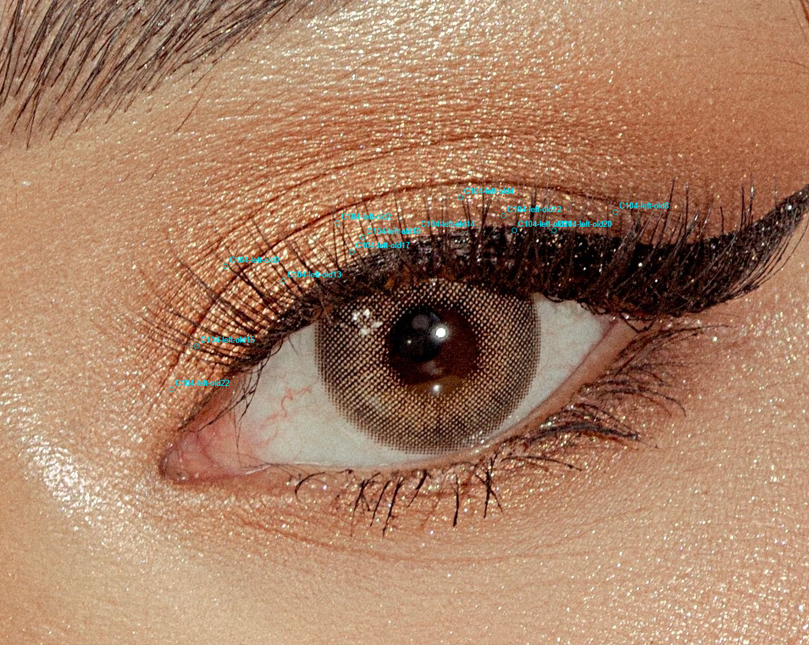
old-id-overlay: tipcase-01-select/right-fixed-old-ids.png 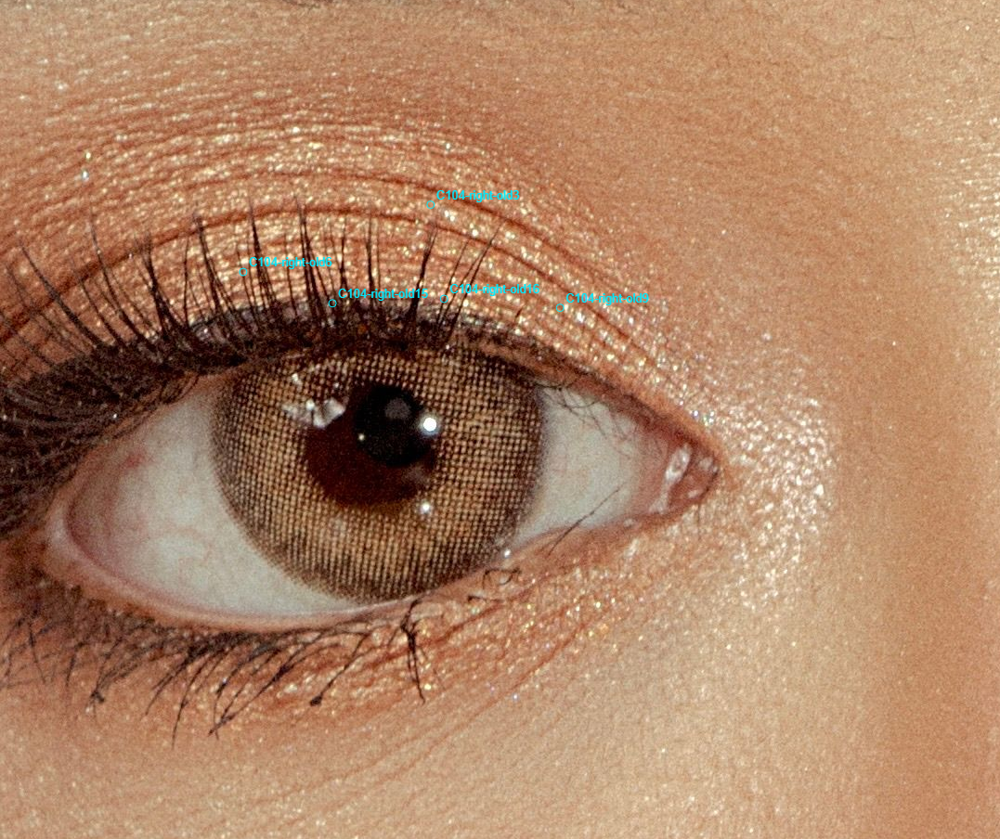
source-and-analysis: tipcase-03-profiles/chromium-C104-right-old16-analysis224-axes.png 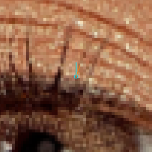
source-and-analysis: tipcase-03-profiles/chromium-C104-right-old16-analysis320-axes.png 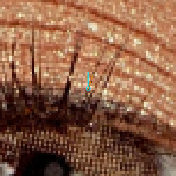
source-and-analysis: tipcase-03-profiles/chromium-C104-right-old16-analysis384-axes.png 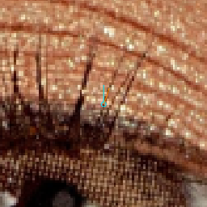
source-and-analysis: tipcase-03-profiles/chromium-C104-right-old16-native-axes.png source-and-analysis: tipcase-03-profiles/chromium-C104-right-old16-native-original.png source-and-analysis: tipcase-03-profiles/chromium-PI729R1-analysis224-axes.png source-and-analysis: tipcase-03-profiles/chromium-PI729R1-analysis320-axes.png source-and-analysis: tipcase-03-profiles/chromium-PI729R1-analysis384-axes.png 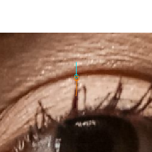
source-and-analysis: tipcase-03-profiles/chromium-PI729R1-native-axes.png source-and-analysis: tipcase-03-profiles/chromium-PI729R1-native-original.png source-and-analysis: tipcase-03-profiles/chromium-PI729R2-analysis224-axes.png 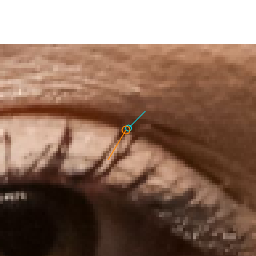
source-and-analysis: tipcase-03-profiles/chromium-PI729R2-analysis320-axes.png source-and-analysis: tipcase-03-profiles/chromium-PI729R2-analysis384-axes.png 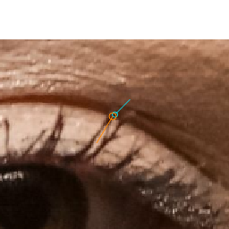
source-and-analysis: tipcase-03-profiles/chromium-PI729R2-native-axes.png source-and-analysis: tipcase-03-profiles/chromium-PI729R2-native-original.png source-and-analysis: tipcase-03-profiles/webkit-C104-right-old16-analysis224-axes.png 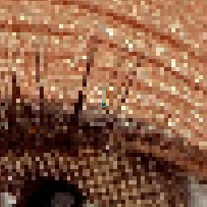
source-and-analysis: tipcase-03-profiles/webkit-C104-right-old16-analysis320-axes.png 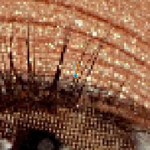
source-and-analysis: tipcase-03-profiles/webkit-C104-right-old16-analysis384-axes.png 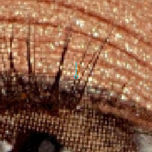
source-and-analysis: tipcase-03-profiles/webkit-C104-right-old16-native-axes.png 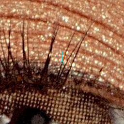
source-and-analysis: tipcase-03-profiles/webkit-C104-right-old16-native-original.png source-and-analysis: tipcase-03-profiles/webkit-PI729R1-analysis224-axes.png source-and-analysis: tipcase-03-profiles/webkit-PI729R1-analysis320-axes.png 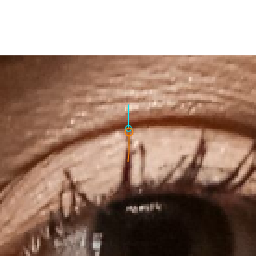
source-and-analysis: tipcase-03-profiles/webkit-PI729R1-analysis384-axes.png source-and-analysis: tipcase-03-profiles/webkit-PI729R1-native-axes.png source-and-analysis: tipcase-03-profiles/webkit-PI729R1-native-original.png source-and-analysis: tipcase-03-profiles/webkit-PI729R2-analysis224-axes.png source-and-analysis: tipcase-03-profiles/webkit-PI729R2-analysis320-axes.png 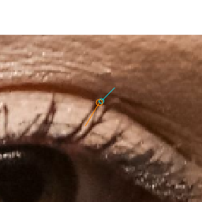
source-and-analysis: tipcase-03-profiles/webkit-PI729R2-analysis384-axes.png source-and-analysis: tipcase-03-profiles/webkit-PI729R2-native-axes.png 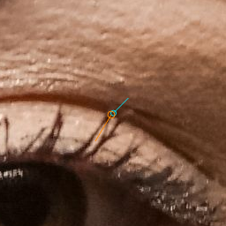
source-and-analysis: tipcase-03-profiles/webkit-PI729R2-native-original.png profile-chart: tipcase-05-plots/chromium-C104-right-old16-anchor-offsets.png 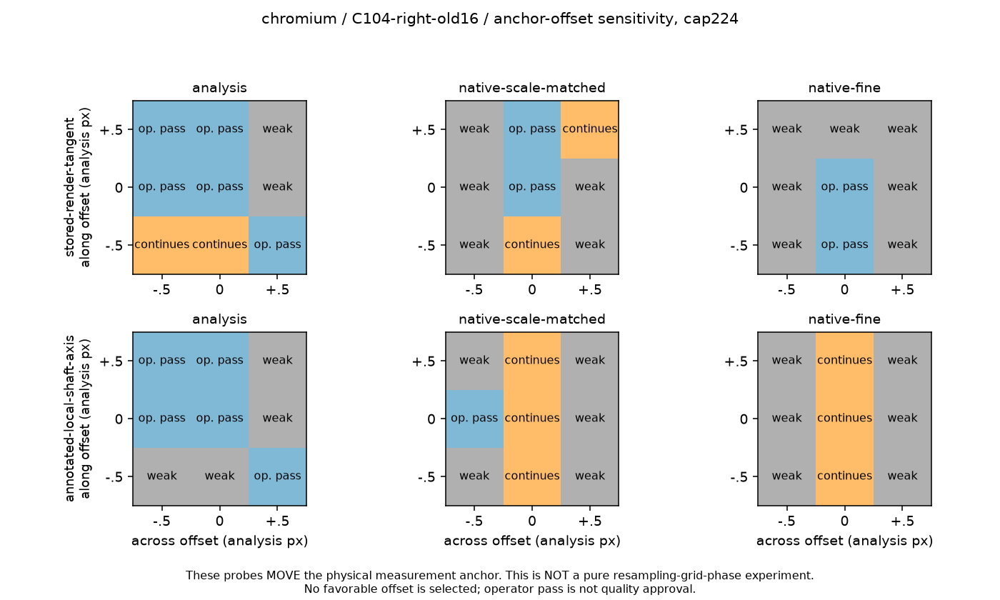
profile-chart: tipcase-05-plots/chromium-C104-right-old16-profiles.png 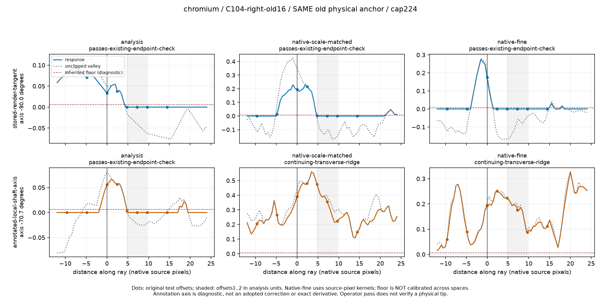
profile-chart: tipcase-05-plots/chromium-PI729R1-anchor-offsets.png 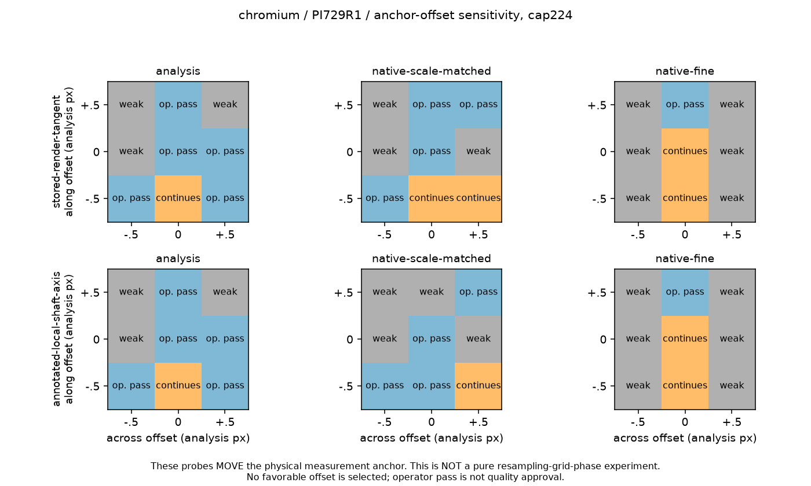
profile-chart: tipcase-05-plots/chromium-PI729R1-profiles.png 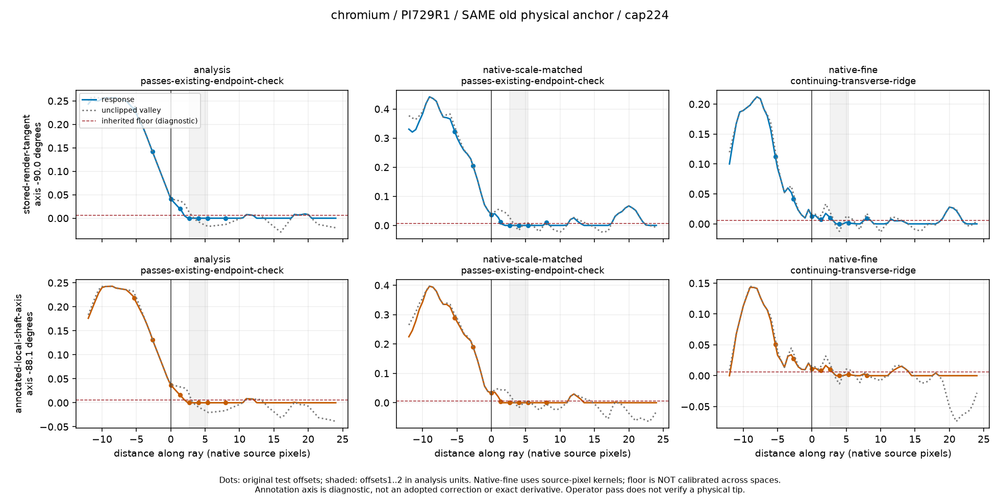
profile-chart: tipcase-05-plots/chromium-PI729R2-anchor-offsets.png 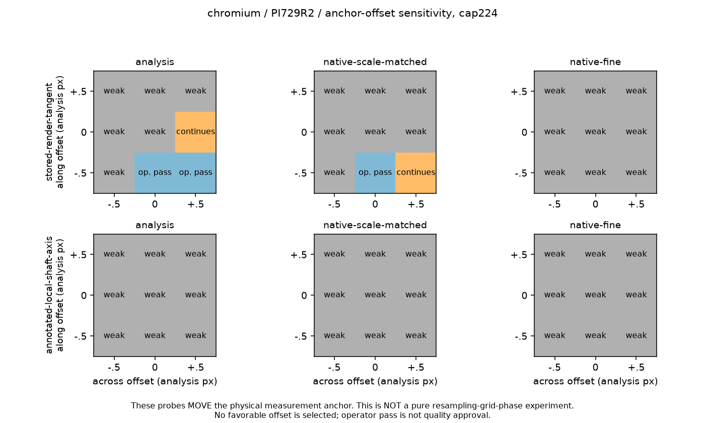
profile-chart: tipcase-05-plots/chromium-PI729R2-profiles.png 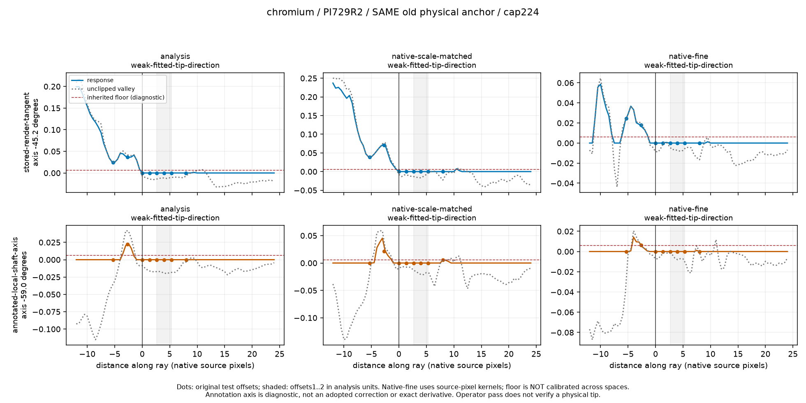
profile-chart: tipcase-05-plots/webkit-C104-right-old16-anchor-offsets.png 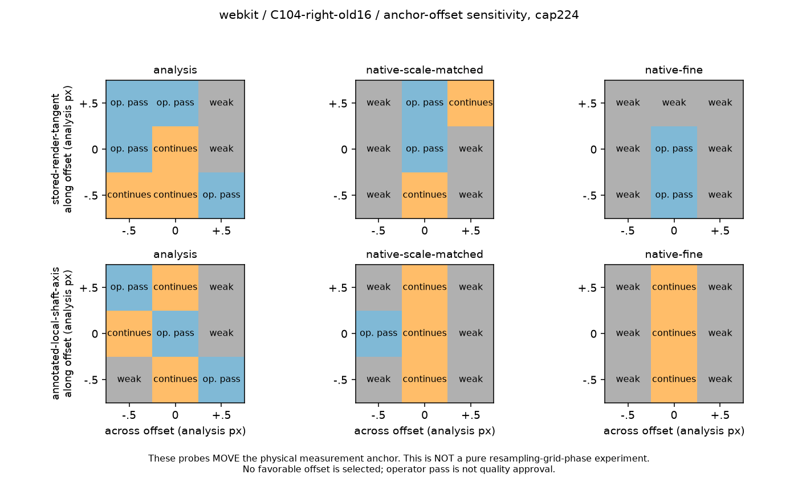
profile-chart: tipcase-05-plots/webkit-C104-right-old16-profiles.png 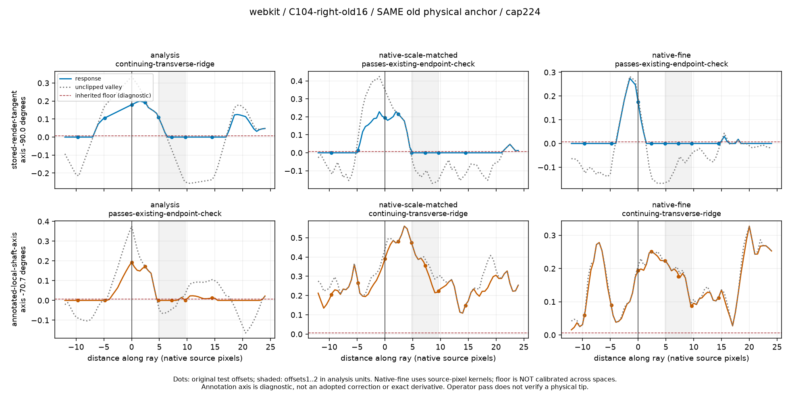
profile-chart: tipcase-05-plots/webkit-PI729R1-anchor-offsets.png 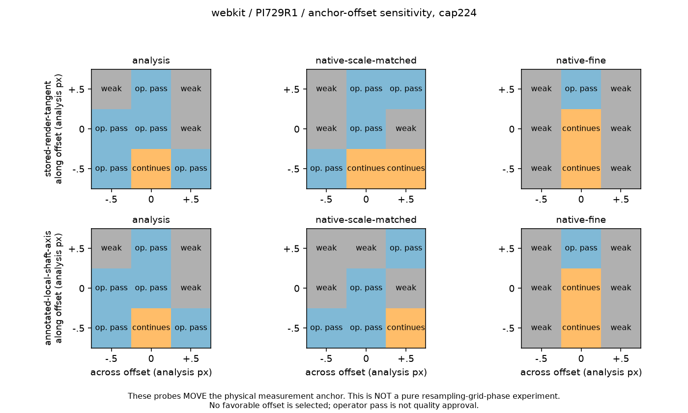
profile-chart: tipcase-05-plots/webkit-PI729R1-profiles.png 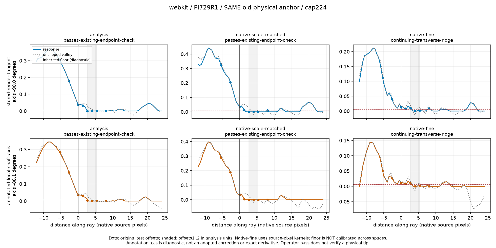
profile-chart: tipcase-05-plots/webkit-PI729R2-anchor-offsets.png 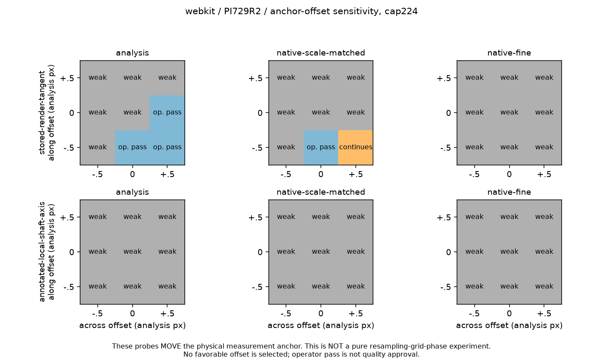
profile-chart: tipcase-05-plots/webkit-PI729R2-profiles.png 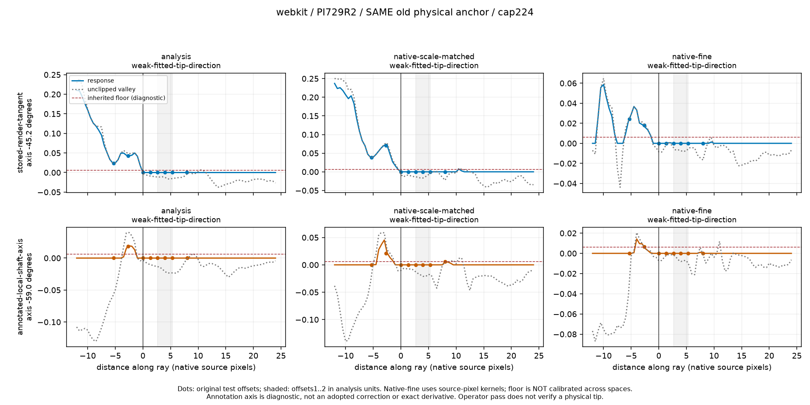
saved-effect-crop: tipcase-08-effect-crops/C104-right-old16-fixed-length100-difference8x.png 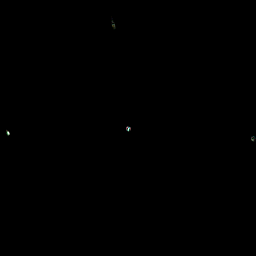
saved-effect-crop: tipcase-08-effect-crops/C104-right-old16-fixed-length100.png 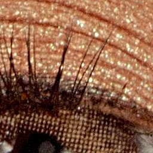
saved-effect-crop: tipcase-08-effect-crops/C104-right-old16-fixed-length50.png saved-effect-crop: tipcase-08-effect-crops/C104-right-old16-source-original.png saved-effect-crop: tipcase-08-effect-crops/C104-right-old16-v6-length100-difference8x.png 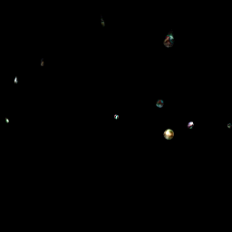
saved-effect-crop: tipcase-08-effect-crops/C104-right-old16-v6-length100.png saved-effect-crop: tipcase-08-effect-crops/C104-right-old16-v6-length50.png saved-effect-crop: tipcase-08-effect-crops/PI729R1-fixed-length100-difference8x.png saved-effect-crop: tipcase-08-effect-crops/PI729R1-fixed-length100.png saved-effect-crop: tipcase-08-effect-crops/PI729R1-fixed-length50.png saved-effect-crop: tipcase-08-effect-crops/PI729R1-source-original.png saved-effect-crop: tipcase-08-effect-crops/PI729R1-v6-length100-difference8x.png 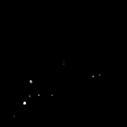
saved-effect-crop: tipcase-08-effect-crops/PI729R1-v6-length100.png 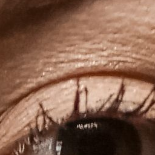
saved-effect-crop: tipcase-08-effect-crops/PI729R1-v6-length50.png saved-effect-crop: tipcase-08-effect-crops/PI729R2-fixed-length100-difference8x.png 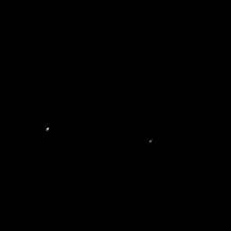
saved-effect-crop: tipcase-08-effect-crops/PI729R2-fixed-length100.png saved-effect-crop: tipcase-08-effect-crops/PI729R2-fixed-length50.png saved-effect-crop: tipcase-08-effect-crops/PI729R2-source-original.png saved-effect-crop: tipcase-08-effect-crops/PI729R2-v6-length100-difference8x.png 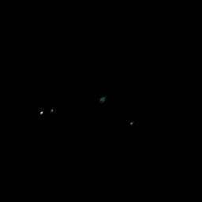
saved-effect-crop: tipcase-08-effect-crops/PI729R2-v6-length100.png saved-effect-crop: tipcase-08-effect-crops/PI729R2-v6-length50.png 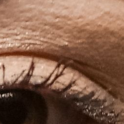